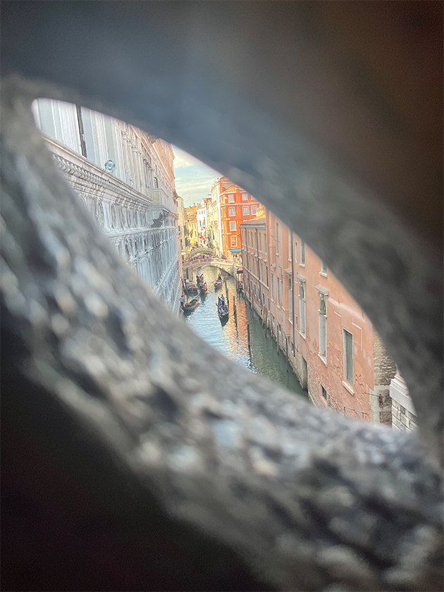
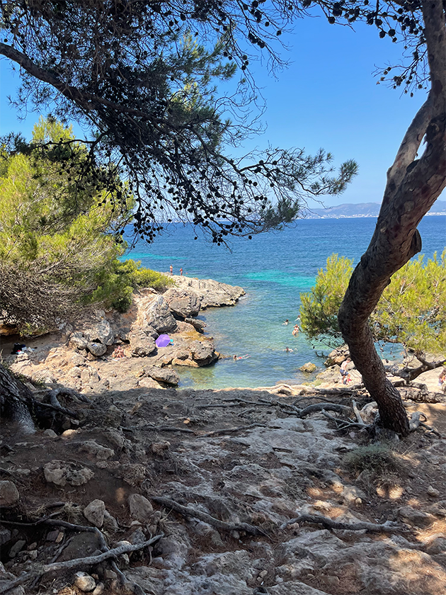

Firstly, the beaches in Tulum are simply breathtaking. With crystal-clear turquoise waters and powdery white sand, it's no surprise that Tulum's beaches are consistently ranked among the best in the world. Whether you're looking to sunbathe, swim, or try your hand at water sports like snorkeling or paddleboarding, Tulum's beaches offer something for everyone.
Tulum is also known for its vibrant local culture and culinary scene. The town is home to a thriving community of artists, musicians, and entrepreneurs, and visitors can explore local markets and festivals to experience the authentic culture of the region. Foodies will love the many delicious restaurants and street food vendors that serve up traditional Mexican dishes using fresh, locally-sourced ingredients.
Finally, Tulum is the perfect destination for eco-conscious travelers. The town is known for its commitment to sustainability and eco-tourism, with many hotels and resorts using environmentally-friendly practices and promoting responsible tourism.
4. Venice, Italy

3. Puerto Vallarta, Mexico
Puerto Vallarta is a popular beach destination located on the west coast of Mexico. With its crystal-clear waters, white sandy beaches, and tropical climate, it's no surprise that visitors from all over the world flock to this stunning location. In addition to its natural beauty, Puerto Vallarta is also known for its lively nightlife, delicious cuisine, and vibrant cultural scene.
One of the best ways to experience Puerto Vallarta is by taking part in outdoor activities such as snorkeling, scuba diving, and deep-sea fishing. If you're interested in history and culture, be sure to visit the city's iconic Malecon boardwalk, where you can admire local art installations and street performers. You can also explore the charming cobblestone streets of the Old Town, where you'll find boutique shops, galleries, and authentic Mexican restaurants.
Whether you're looking to relax on the beach, explore the city's many attractions, or immerse yourself in the local culture, Puerto Vallarta has something to offer everyone. With its warm hospitality, natural beauty, and vibrant energy, this enchanting destination is sure to provide an unforgettable travel experience.
2. Mallorca, Spain

1. Nice, France
Nice, France, is a charming city located on the French Riviera. With its sunny weather, picturesque coastline, and rich cultural heritage, it's a popular destination for tourists from around the world. One of the best ways to experience Nice is by strolling along the Promenade des Anglais, a scenic boulevard that runs along the beach and offers breathtaking views of the Mediterranean Sea.
In addition to its natural beauty, Nice is also known for its rich history and culture. The city is home to several museums, including the Museum of Modern and Contemporary Art and the Matisse Museum, which showcase some of the world's most famous artworks. You can also explore the charming narrow streets of the Old Town, where you'll find boutique shops, cafés, and restaurants serving up delicious French cuisine.
Whether you're looking to relax on the beach, explore the city's cultural offerings, or indulge in delicious food and wine, Nice is a destination that has something for everyone. With its stunning scenery, vibrant culture, and warm hospitality, it's no wonder that this city is a favorite among travelers.